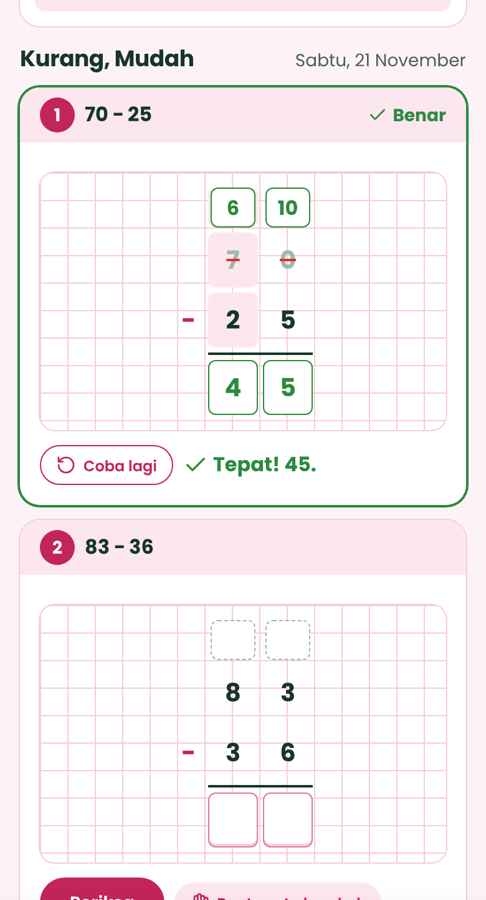

{{HOOK}}
6
11
7
1
−
4
6
5
2
1 lebih kecil dari 6.
Pinjam 1 puluhan dari 7.
Pinjam 1 puluhan dari 7.
7 jadi 6, 1 jadi 11
11 − 6 = 5
6 − 4 = 2
6 − 4 = 2
71 − 46 = 25
Kotak pinjaman menuntun
setiap langkah
setiap langkah

Latihan bersusun
tiap hari
tiap hari
Coba Bab 1 gratis
besmartkids.id
Paket SD, SMP, atau SMA Rp79.000
akses 1 tahun
akses 1 tahun